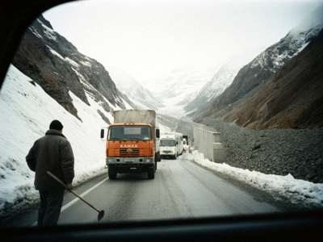
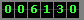

ПЕРЕВАЛЫ · АШУУЛАР · for drivers, from a driver
Last update: 06.06.2000, 07:30. I update every morning when I am in the office, so Monday to Saturday. Sunday you are on your own, ha ha.
I am Ermek, dispatcher at a transport company in Talas (I will not name it, the boss doesn't know about this page). Every morning I phone our drivers, the road service posts and my friends in the villages and ask: what is on the pass? I wrote it on a paper on the wall for our drivers. Then my nephew said: put it on internet, then all drivers can see it. So now it is here. It is not official. The official report is on the radio at 6:15 and it is usually yesterday's.
| Pass / road | Status | Notes 06.06.2000 |
| Otmek (tunnel, Talas – Suusamyr, main road south) | OPEN | Dry. Tunnel lights broken again in the middle, drive with headlights, slow. Queue at the north portal in the morning, 20-30 min. |
| Suusamyr valley road | OPEN | Herders moving to summer pasture, sheep on the road all day. Be patient. |
| Ala-Bel (to Toktogul) | OPEN, CARE | Rain at night, fog on top until 10:00. Mudslide cleared near the 2nd bridge. Lorries max 40 km/h on the descent. |
| Naryn gorge road (Toktogul – Iyık Janyl) | OPEN, CARE | Stones on the road after rain, the usual places. Don't stop under the red cliff. |
| Kenkol pass road | OPEN | Gravel, dry. |
| Karakoyun and Kara-Buura pass (Chatkal road, 3,305 m) | CLOSED | Snow on the top still. The road service says open "maybe 15 June". Last year it was 22 June. Don't believe anybody who says it is open. |
| Kök-Bel road (north side) | OPEN | Good. |
Green = open. Yellow = open but be careful. Red = closed. Grey = I don't know today.

The south road in March 2000, from our KamAZ, waiting for the snow plough. My driver Kubanych waited here 6 hours.
Ermek's rules for the passes
- From November to April: chains in the cabin, always. Also a shovel, a blanket, bread, and full tank.
- Never go up the pass after 15:00 in winter. If something happens, nobody comes in the dark.
- In the tunnel: headlights ON, no overtaking, if the engine dies — stay in the cabin with the window a bit open (the air in there is bad).
- Avalanche season (February-April): if you see a fresh avalanche on the road, the next one is coming. Turn back.
- The man at the road post knows more than the radio. Bring him cigarettes.
- Spring: the passes "open" on paper one week before they open in reality.
Phones of the road posts
I don't put them here, they asked me not to (too many calls). Ring our office and I will tell you.
Last winter's closures (1999-2000)
| Pass | Days closed | Worst |
| Otmek | 11 | 4 days in February, avalanche at the south portal |
| Ala-Bel | 17 | January, 5 days snow storm |
| Kara-Buura pass | whole winter | as always, Oct to June |
Drivers: write me what you saw on the road, I add it with your name if you want: ermek_pass@attelkom.net

Drive carefully. Jolung bolsun!